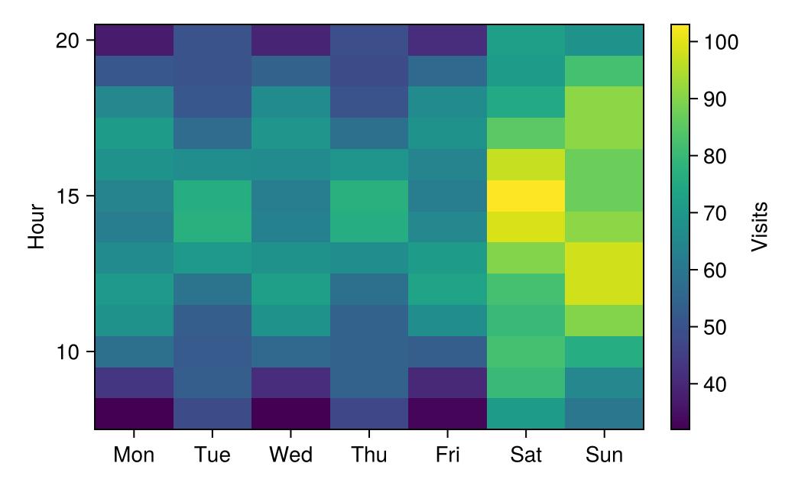

heatmap! and image!
masque(fig) makes each cell of a heatmap or image respond: hovering a cell shows its place in your matrix and its value, and a click selects it and sends it to your notebook. Hover the cells below, then click one:
Notebook as text
using Masque, CairoMakie, Randombegin
days = ["Mon", "Tue", "Wed", "Thu", "Fri", "Sat", "Sun"]
hours = 8:20
visits = [
round(
Int,
40 + 30 * sin((h - 8) / 4) + (d >= 6 ? 25 : 0) + 8 * sin(3d + h),
) for d in 1:7, h in hours
]
fig = Figure(size = (520, 320))
ax = Axis(fig[1, 1]; xticks = (1:7, days), ylabel = "Hour")
hm = heatmap!(ax, 1:7, hours, visits; colormap = :viridis)
Colorbar(fig[1, 2], hm; label = "Visits")
nothing
end@bind pick masque(fig; bind = hm)
pickWhat a click returns
A click gives a GridCellEvent with these fields. Here the figure passes the heatmap as bind, so pick is that event itself; with @bind sel masque(fig), it is sel.cells.
| Field | What it holds |
|---|---|
i, j | the cell's first and second index in your matrix; Makie draws the first along x |
value | the cell's value |
visits[pick] reads the same cell from your matrix, and pick.i and pick.j index your own labels: days[pick.i] is the weekday.
Show your own data
Give payloads a function of the cell's i and j, and a tooltip template that uses the fields it returns. The template can use the cell's own value next to yours:
Notebook as text
masque(
fig,
interactables(
hm;
payloads = (i, j) -> (day = days[i], hour = hours[j]),
tooltip = masque"<b>$(day), $(hour):00</b><br>$(value) visits",
),
)A click also returns the payload's fields, so pick.day is the weekday you clicked. A matrix of payloads, the same shape as your data, works too. On a large grid, see Large grids first. Tooltips lists what a template can do.
Select several cells
Pass select = :many, and each click adds a cell to the selection or takes it out again:
With @bind sel in front, sel.cells is then a GridSelection: a mask the size of your matrix, so visits[sel.cells] is the selected values and findall(sel.cells) their places. Select several marks says more about select = :many, and Heatmaps and images shows how to select a block of cells by dragging, and how to treat a group of cells as one region.
Read an image
An image! responds the same way. A template can format the value:
Notebook as text
begin
rng = Xoshiro(3)
scan = [
exp(-((x - 20)^2 + (y - 14)^2) / 60) +
0.6 * exp(-((x - 8)^2 + (y - 22)^2) / 20) +
0.05 * rand(rng)
for x in 1:32, y in 1:32
]
fig2 = Figure(size = (520, 320))
ax2 = Axis(
fig2[1, 1];
aspect = DataAspect(),
yreversed = true,
title = "Scan",
)
img = image!(ax2, scan; colormap = :grays, interpolate = false)
masque(
fig2,
interactables(
img;
tooltip = masque"pixel $(i), $(j)<br>intensity $(value:.2f)",
),
)
endA color image has no single value per pixel, so it reports only i and j; img[pick] reads the color.
Supported axes
heatmap! and image! work on a 2D Axis. A heatmap! on a PolarAxis is skipped with a warning; draw the matrix with surface!(ax, θ, r, values; shading = NoShading) there instead, and it responds point by point.
Where to go next
Heatmaps and images covers grids in depth: naming two grids, regions, grids built from edges and values, and very large grids. For a heatmap whose click drives a line plot in another cell, see From a heatmap cell to its trace. To mask the pixels above a cutoff you drag, see Threshold a mask.